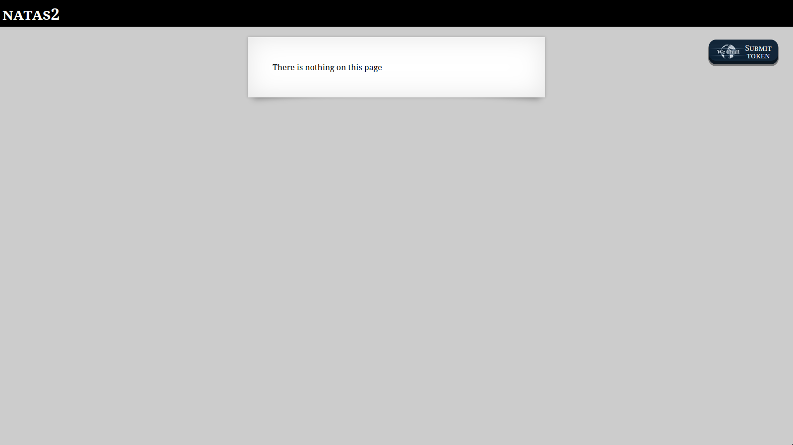
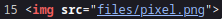
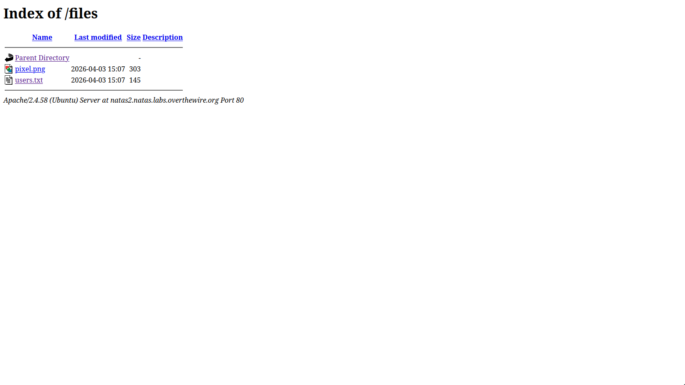
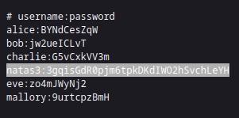

When you open this challenge, you are greeted with the familiar message: “There is nothing on this page.”

As with the previous challenges, we start by viewing the page source.
This reveals a directory we previously didn’t know about:/files.
Visiting this directory shows two files:pixel.png and a new file, users.txt.

After accessing/users.txt, we are shown several usernames and passwords. One of which is the password for Natas 3.3gqisGdR0pjm6tpkDKdIWO2hSvchLeYH
Back